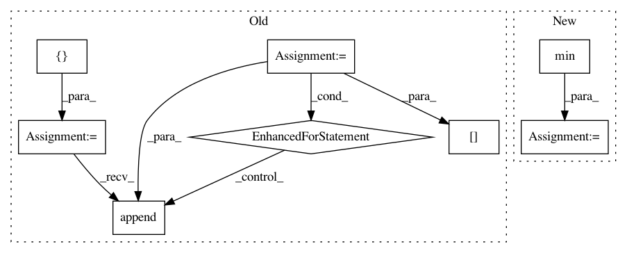

2f045e23607f4660d3920d6a91e322311516d6d6,examples/plotting/file/unemployment.py,,,#,8
Before Change
// Set up the data for plotting. We will need to have values for every
// pair of year/month names. Map the rate to a color.
month = []
year = []
color = []
rate = []
for y in years:
for m in months:
month.append(m)
year.append(y)
monthly_rate = data[m][y]
rate.append(monthly_rate)
source = ColumnDataSource(
data=dict(month=month, year=year, rate=rate)
)
After Change
// this is the colormap from the original NYTimes plot
colors = ["/�f", "//a5bab7", "//c9d9d3", "//e2e2e2", "//dfccce", "//ddb7b1", "//cc7878", "/묽b41", "/릾b1d"]
mapper = LinearColorMapper(palette=colors, low=df.rate.min(), high=df.rate.max())
source = ColumnDataSource(df)
TOOLS = "hover,save,pan,box_zoom,reset,wheel_zoom"
p = figure(title="US Unemployment ({0} - {1})".format(years[0], years[-1]),
x_range=years, y_range=list(reversed(months)),
x_axis_location="above", plot_width=900, plot_height=400,
tools=TOOLS, toolbar_location="below")
p.grid.grid_line_color = None
p.axis.axis_line_color = None
p.axis.major_tick_line_color = None
p.axis.major_label_text_font_size = "5pt"
p.axis.major_label_standoff = 0
p.xaxis.major_label_orientation = pi / 3
p.rect(x="Year", y="Month", width=1, height=1,
source=source,
fill_color={"field": "rate", "transform": mapper},
line_color=None)
color_bar = ColorBar(color_mapper=mapper, major_label_text_font_size="5pt",
ticker=BasicTicker(desired_num_ticks=len(colors)),
location=(0, 0))
p.add_layout(color_bar, "right")
p.select_one(HoverTool).tooltips = [
("date", "@Month @Year"),
In pattern: SUPERPATTERN
Frequency: 4
Non-data size: 8
Instances
Project Name: bokeh/bokeh
Commit Name: 2f045e23607f4660d3920d6a91e322311516d6d6
Time: 2017-03-29
Author: jsignell@gmail.com
File Name: examples/plotting/file/unemployment.py
Class Name:
Method Name:
Project Name: automl/SMAC3
Commit Name: 2402c8a3c28f5c6faf9931fe97b6516b7c426edb
Time: 2016-02-12
Author: lindauer@cs.uni-freiburg.de
File Name: smac/smbo/intensification.py
Class Name: Intensifier
Method Name: intensify
Project Name: bokeh/bokeh
Commit Name: a6e3f06dff54fe4f34bf02a81e53852fa95b227d
Time: 2015-08-30
Author: nroth@dealnews.com
File Name: bokeh/charts/builder/bar_builder.py
Class Name: BarGlyph
Method Name: __dodge__
Project Name: IndicoDataSolutions/Enso
Commit Name: 7f46b2274cb8958441b1236e8fd7ac39d546a732
Time: 2017-12-13
Author: maritza@mylestone.com
File Name: enso/sample/__init__.py
Class Name: KCenter
Method Name: sample